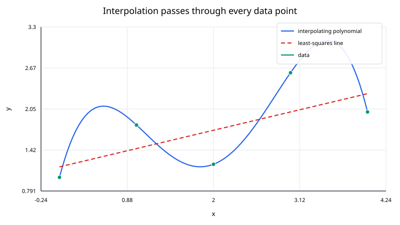
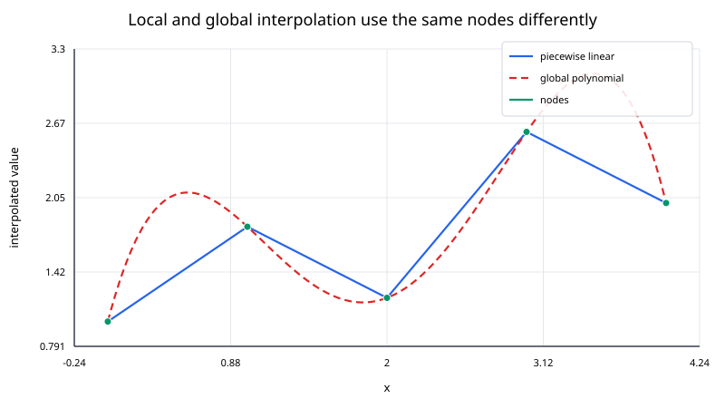

Interpolation constructs a function that passes exactly through a set of known data points. If the data are
$$ (x_0,y_0),(x_1,y_1),\ldots,(x_n,y_n), $$
an interpolant $p(x)$ satisfies
$$ p(x_i) = y_i, \qquad i = 0,1,\ldots,n. $$
This is different from regression or approximation. A regression model is usually allowed to miss individual observations in order to capture an overall trend; an interpolant treats the supplied values as exact constraints.

The distinction matters. If the measurements are noisy, exact interpolation may reproduce noise that should have been smoothed away. If the values come from a trusted table, simulation, or expensive deterministic function, exact interpolation can be exactly what is needed.
Suppose a function is known only at selected locations. We want to estimate its value at a query point $x_*$ between those locations.
Typical examples include:
The input nodes should be distinct. In one dimension it is usually convenient to sort them so that
$$ x_0 < x_1 < \cdots < x_n. $$
Interpolation is primarily an in-domain operation. Evaluating outside the range $[x_0,x_n]$ is extrapolation, which is usually less reliable because the data no longer constrain the model on both sides of the query.
Interpolation methods differ mainly in how much of the data they use to answer one query.
A local method uses only nearby points. Piecewise linear interpolation, for example, uses the two nodes surrounding the query. Cubic splines use one local polynomial segment for evaluation, although their coefficients are coupled through a global system.
A global method uses all data points in one formula. Lagrange interpolation, Newton interpolation, and Gaussian radial basis function interpolation are examples.

This local-versus-global distinction affects cost, smoothness, sensitivity, and how much the interpolant changes when one observation is modified.
Consider
$$ (0,1), \qquad (1,2), \qquad (2,0). $$
To estimate the value at $x_*=1.5$, piecewise linear interpolation uses only the interval $[1,2]$:
$$ t = \frac{1.5-1}{2-1} = 0.5. $$
The interpolated value is
$$ p(1.5) = (1 - t)\cdot 2 + t\cdot 0 = 1. $$
A quadratic polynomial through all three points gives a different curve between the nodes even though it reproduces the same three data values exactly. Both are valid interpolants; they encode different assumptions about the shape between observations.
For $n+1$ distinct one-dimensional nodes, there is exactly one polynomial of degree at most $n$ that passes through all points.
It can be represented in several mathematically equivalent forms:
$$ p(x) = a_0 + a_1x + \cdots + a_nx^n, $$
which is conceptually simple but often a poor numerical representation for solving the interpolation problem directly.
The representation matters numerically even when the underlying polynomial is the same.
High-degree global polynomials can oscillate strongly, especially near the ends of an interval when nodes are equally spaced. Piecewise methods avoid fitting one large polynomial across the whole domain.
Two important examples are:
Piecewise methods are often preferable when the dataset has many nodes.
Interpolation can also be built from distance-based basis functions. In one dimension, Gaussian radial basis function interpolation has the form
$$ s(x) = \sum_{j=0}^{n}\lambda_j e^{-\varepsilon^2(x-x_j)^2}. $$
In two dimensions, thin-plate splines use a radial kernel such as
$$ \phi(r) = r^2\log r, $$
with the value at $r=0$ defined by continuity as $0$.
RBF methods generalize naturally to scattered multidimensional data, where there may be no convenient one-dimensional ordering of the nodes.
An interpolant reproduces the data exactly, but that does not imply that it reproduces the unknown function exactly between the nodes.
For polynomial interpolation through $n+1$ nodes, if the underlying function $f$ is sufficiently smooth, the error can be written as
$$ f(x) - p_n(x) = \frac{f^{(n+1)}(\xi_x)}{(n+1)!} \prod_{i=0}^{n}(x - x_i) $$
for some point $\xi_x$ in the interval containing the nodes and the query.
This expression shows two sources of error:
Adding more equally spaced nodes does not automatically improve a global polynomial interpolant. Node placement and numerical stability matter.
Before choosing an interpolation method, ask:
Are the observations effectively exact?\ If the values contain substantial measurement noise, regression or smoothing may be more appropriate.
How smooth should the result be?\ Piecewise linear interpolation is continuous but not differentiable at the knots. Cubic splines are smoother. Gaussian RBF interpolants are infinitely differentiable.
Is the data one-dimensional or scattered in several dimensions?\ Polynomial and spline methods are especially natural in one dimension. RBF methods are often convenient for scattered multidimensional data.
Will points be added frequently?\ Newton interpolation has an incremental form. A global solve may be less convenient if the dataset changes often.
How many queries will be evaluated?\ Some methods have a relatively expensive setup followed by cheap evaluations. For repeated queries, that setup can be worthwhile.
For $n+1$ nodes:
| Method | Setup | Cost per scalar query | Typical property |
|---|---|---|---|
| Piecewise linear | $O(n)$ preprocessing or none | $O(\log n)$ interval search | local, continuous |
| Newton polynomial | $O(n^2)$ divided differences | $O(n)$ | global polynomial |
| Lagrange polynomial | $O(n^2)$ naive setup, $O(n)$ barycentric setup | $O(n)$ | global polynomial |
| Natural cubic spline | $O(n)$ with a tridiagonal solver | $O(\log n)$ + constant evaluation | local cubic pieces, $C^2$ |
| Gaussian RBF | dense solve, typically $O(n^3)$ | $O(n)$ | global, very smooth |
The exact costs depend on implementation and whether many queries are evaluated in a batch.
Within the data range, nearby samples constrain the interpolant on both sides. Outside that range, the interpolant follows the assumptions of the chosen model rather than direct information from the data.
For example:
An implementation should make the extrapolation policy explicit rather than silently assuming that interpolation and extrapolation have the same reliability.
A robust interpolation workflow is: